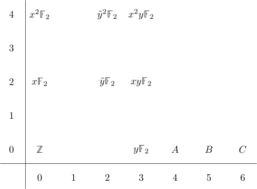
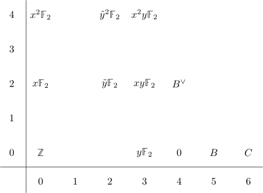

some low integral cohomology of K(Z/2,2)
Proposition
The reduced cohomology of the Eilenberg-MacLane space $K(\mathbb{Z}/2 \mathbb{Z},2)$ is given by
todo: use F2 cohomology of the F2 Eilenberg MacLane Space
- and that to compare
Proof
we use integral cohomology of infinite real projective space and the fiber sequence
Now using integral cohomology of a space with finite homotopy groups and homology as well as Hurewicz theorem shows
Then using
- trivial entry on the axis does not imply trivial entry on the vertical line in the serre spectral sequence
- trivial entry on axis and trivial entry on horizontal line in the serre spectral sequences
and sketching the spectral sequence gives

I'm not sure about how robust kunneth is here ?
Then $A = 0$ since there is no possible differential to kill this.
Now we want to understand the cardinality of $B$:
First we notice that
by the leibniz rule, since in $xy\mathbb{F}_2$ every element is \(2\)-torsion Therefore for degreereasons the group $x^2 \mathbb{F}_2$ has to be killed by $d_5: x^2 \mathbb{F}_2 \rightarrow B$. Furthermore $\tilde{y} \mathbb{F}_2$ has to be killed (for formal degreereasons) by $d_3: \tilde{y}\mathbb{F}_2 \rightarrow B$. Hence in particular $B$ has to contain at least $4$ elements.
Therefore we need to solve an extension problem:
Now lets keep track of some low homology of $K(\mathbb{Z}/2 \mathbb{Z}, 2)$. By the shifting argument we get
We want to compute some \(\mathbb{F}_2\)-cohomology of $K(\mathbb{Z}/2 \mathbb{Z},2)$: the universal coefficient Theorem for cohomology yields
So we may add

Now using above we can deduce
and sketch the $\mathbb{F}_2$ spectral sequence (todo).
Then $B \otimes \mathbb{Z}/2 \mathbb{Z} = \mathbb{Z}/2 \mathbb{Z}$ so in particular $B \cong \mathbb{Z}/4 \mathbb{Z}$.